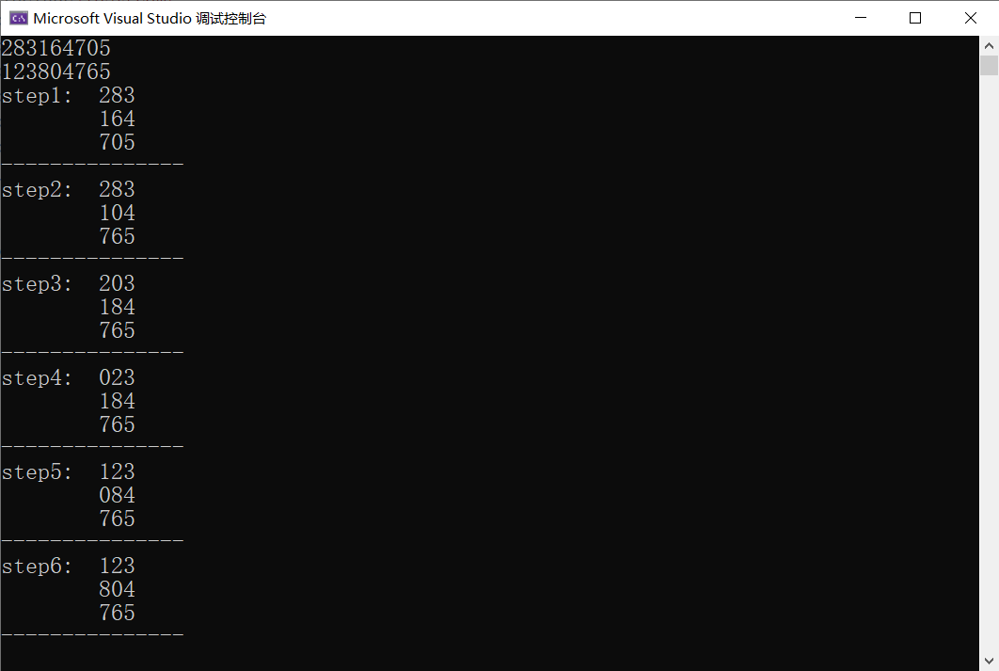

人工智能作业 使用AStar算法解决八数码问题
八数码问题是一个经典的搜索问题，本文将介绍如何使用启发式搜索—— AStar 算法来求解八数码问题。
使用AStar算法解决八数码问题
问题描述
八数码问题的A星搜索算法实现
要求：设计估价函数，并采用c或python编程实现，以八数码为例演示A星算法的搜索过程，争取做到直观、清晰地演示算法，代码要适当加注释。
八数码难题：在3×3方格棋盘上，分别放置了标有数字1,2,3,4,5,6,7,8的八张牌，初始状态S0可自己随机设定，使用的操作有：空格上移，空格左移，空格右移，空格下移。试采用A*算法编一程序实现这一搜索过程。
算法描述
预估值的设计
A* 算法的花费为 f(n) = g(n) + h(n)，其中 g(n) 为搜索深度，定义为状态单元 state 的成员变量，在每次生成子节点时将其加一。h(n) 为不对位的将牌数，将该部分的计算重载于 state 的小于运算符中，并将 f(n) = g(n) + h(n) 的值作为状态单元的比较值。
数据结构设计
- 每个状态用一个结构体表示，其中 depth 为状态深度，str 为该状态字符串，并重载小于运算符用于计算最优。
- open 表使用优先队列
priority_queue，实现在 O(logn) 的时间复杂度内获取最优值。 - close 表使用哈希集合
unordered_set，实现在 O(1) 时间复杂度内判断某状态是否已位于 close 表中。 - 而为了得到最优搜索路径，还需要将每个状态的前驱加以保存，前驱表 pre 我使用了哈希表
unordered_map，模板类型为pair<string, string>，表示 key 的前驱为 value。
代码
1 |
|
运行结果
输入
原状态：283164705, 目标状态：123804765
输出

本博客所有文章除特别声明外，均采用 CC BY-NC-SA 4.0 许可协议。转载请注明来源 PageFault！
 微信
微信 支付宝
支付宝
相关推荐

2022-04-27
人工智能作业 使用K-means算法进行聚类分析
本文将介绍如何使用 K-means 算法对给定的坐标数据进行聚类分析。 使用K-means算法进行聚类分析问题描述 K-means算法对data中数据进行聚类分析 （1）算法原理描述 （2）算法结构 （3）写出K-means具体功能函数（不能直接调用sklearn.cluster(Means)功能函数)具体函数功能中返回值包括 数据类标签，累中心，输入包括：数据，类别数 （4）可视化画图，不同类数据采用不同颜色 （5）算法分析 类类方差，平均方差，不同初始点对聚类结果的影响？ 如何解决？ 算法描述 数据结构设计： 数据点使用自定义数据类型point，包含x和y两个变量。 中心点一个大小为k的数组center进行存储，从文本中提取的坐标数据使用可变数组coords进行存储，不同的坐标点分组采用一个可变的二维数组group进行存储。 函数介绍： extraCoords(): 从文本文件中提取坐标数据并存入coords中，提取算法为：首先使用传入文件路径初始化文件IO流fileStream，再逐个输出fileStream中的数据。若为字母，则不接收。否则两个一组...

2022-05-26
人工智能作业 使用遗传算法解决旅行商问题
遗传算法（Genetic Algorithm，GA）最早是由美国的 John holland于20世纪70年代提出,该算法是根据大自然中生物体进化规律而设计提出的。是模拟达尔文生物进化论的自然选择和遗传学机理的生物进化过程的计算模型，是一种通过模拟自然进化过程搜索最优解的方法。本文利用遗传算法解决经典的NP问题——旅行商问题，并加深对该算法的理解。 问题描述有若干个城市，每个城市给定一个坐标，一个旅行商需要经过每个城市各一遍且不能重复经过城市，起点可以任意选择，求旅行商经过所有城市的总距离的最小值及其最优路径。 数据结构与算法设计数据结构设计 struct point 从文本提取的城市的坐标数据，包含 id, x, y. const int idNum = 100; // 种群个体数 表示种群的个体数目，即每次迭代所包含的数据的个数。 const double variProbability = 0.05; // 变异概率 遗传过程可能导致变异，变异次数 = 变异概率 * 种群个体数。 vector<point> coords; // 各点坐标 从文本...

2022-01-16
LeetCode周赛总结 第276场
本次周赛相对比较简单，前三题花的时间比较短，但无奈最后一题还是没思路。。。 将字符串拆分成若干长度为 k 的组题目链接将字符串拆分成若干长度为 k 的组 解题思路遍历字符串 s 的每个字符并加入到一个临时字符串中，当此临时字符串长度为 k 时，加入到结果数组中并清空此字符串。若此时遍历到字符串的最后一个字符且此时临时字符串长度没有达到 k 时，则向其末尾填入字符 fill 直到临时字符串长度达到 k，再加入到结果数组中。 解题代码123456789101112131415161718192021class Solution {public: vector<string> divideString(string s, int k, char fill) { vector<string> res; string newStr; for (int i = 0; i < s.size(); i++) { newStr += s[i]; i...

2024-03-18
高效的区间二叉搜索树：线段树
与树状数组类似，线段树也是一种用来维护区间信息的数据结构，可以在对数时间复杂度内实现更新和查询等操作。但相较于树状数组多用于前缀和查询不同，线段树的应用范围更为广泛，例如区间最值等问题，代价是需要消耗更多的存储空间。 结构对于一个长度为 7 的数组，根据该数组 nums 元素建立的线段树结构如下图所示。 每个结点存储的值为区间 nums[L ~ R] 的元素和，其中根节点对应的 L = 0, R = 6，即整个数组的元素和。然后每一层的结点将区间均分为 [L, (L + R) / 2] 和 [(L + R) / 2 + 1, R] 两部分。注意按此方式进行划分，得到的两个子区间始终满足：左右区间长度分别为 len1 和 len2，且 len1 == len2 || len1 == len2 + 1。不难得知：这样的结构构成一个完全二叉树，因此使用顺序存储将会变得很方便：根节点下标为 0；对于每个下标为 idx 的结点，其左孩子下标为 2 * idx + 1，右孩子下标为 2 * idx + 2。 构造由于叶子结点的 L 和 R 相等，其值正好为 nums[L]，而每个父结点的值...

2023-08-28
算法分析与设计编程题 动态规划
矩阵连乘题目描述 解题代码12345678910111213141516171819202122232425262728293031323334353637void printOptimalParens(vector<vector<int>>& partition, int i, int j) { if (i == j) cout << "A" << i; // 单个矩阵，无需划分 else { cout << "("; printOptimalParens(partition, i, partition[i][j]); printOptimalParens(partition, partition[i][j] + 1, j); cout << ")"; }}// nums[i]: nums[0]为矩阵A1的行数，nums[i](i >= 1)表示矩阵Ai的列数// 如输入为 nums ...

2022-03-16
子集生成算法
本文介绍生成一个集合子集的两种常见算法，借此从中深入理解搜索问题中常见的两种思路。 递归回溯思路对于集合中的每个元素，我们都有选择和不选择两种处理方式，这种思路类似于二叉树的遍历，每种情况都向下衍生出两种情况，最终当遍历到下标 index = nums.size() 时，将生成的子集保存。 由于此处我们使用一个数组的引用来保存子集元素，因此在递归回溯时，我们需要手动将上一步中加入添加的元素去除，来回溯到该元素未被选择的状态。 代码1234567891011121314151617181920class Solution {private: std::vector<std::vector<int>> Sets; void search(std::vector<int>& subset, std::vector<int>& nums, int index) { if (index == nums.size()) { Sets.emplace_back(subset); retur...